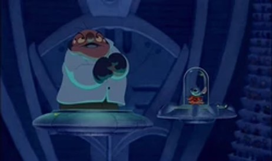
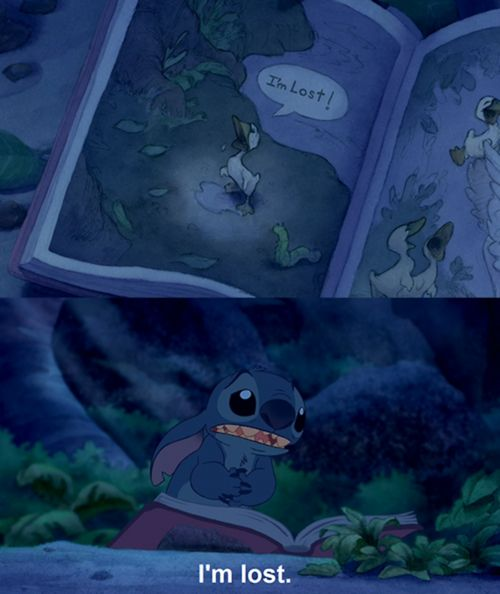
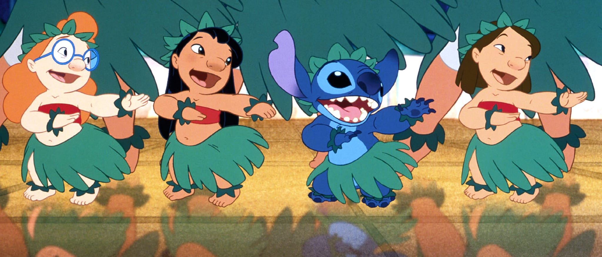
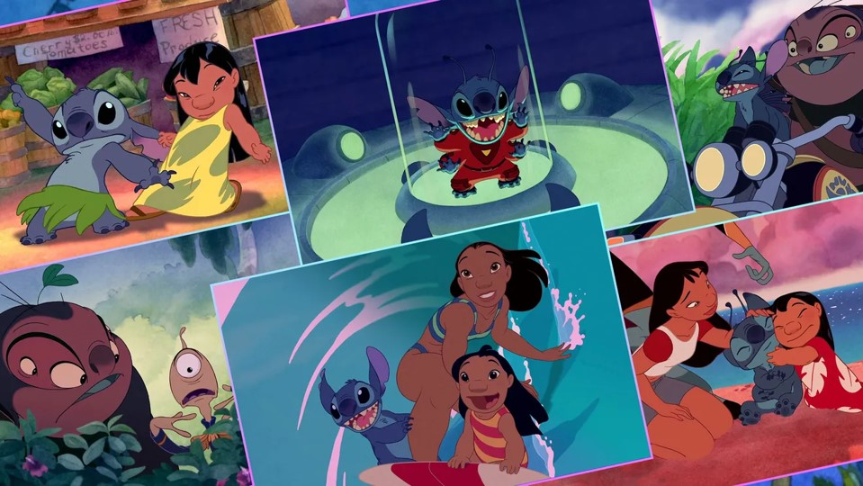
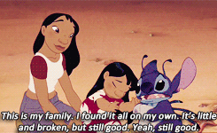

Disney's
Stitch's Character Arc
“Monstrosity? What you see before you is the first of a new species. I call it Experiment 626. He is bulletproof, fireproof, and can think faster than [a] supercomputer. He can see in the dark, and lift objects three thousand times his size. His only instinct... to destroy everything he touches!” ―Jumba Jookiba

“626 was designed to be a monster, but now he has nothing to destroy. You see, I never gave him a greater purpose. What must it be like to have nothing, not even memories to look back on in the middle of the night?”
―Jumba giving an example on the instinct of Stitch
Over the course of time, with nothing of substance to destroy, Stitch finds himself questioning his purpose in life, coming to realize he has nothing if he cannot wreak havoc and destroy because he was only created to be a monster. After going through Lilo's collection of books, Stitch discovers the story of The Ugly Duckling and is immediately taken by the tale. When Lilo explains the duckling was sad because he was lost, but became happy again after finding his family and a place to belong, Stitch tries afterward to fit in with Lilo's family. However, his proclivity for mishaps and interference from Jumba and Pleakley turn this into a futile effort. Eventually, and just when he thinks that things might be happening for the best, one final bit of mayhem (thanks to the alien bounty hunters) results in Nani losing custody of Lilo. Heartbroken by his destruction of the family he has learned to care for, and realizing everything is his fault, Stitch runs away into the night, believing she has a better chance at happiness without him and seeking to find a family of his own. He takes the Ugly Duckling book with him.

In comparison to his super strength and computer-like intelligence, Stitch is emotionally fragile, behaving almost like a child having a tantrum at times. Lilo relates to this and believes that a couple of main reasons for his naughtiness are because of some past trauma and receiving little to no understanding or sympathy from others. Of course, Stitch eventually becomes much more well-meaning after his betterment, but is frequently unable to control all of his impulses toward anti-social actions. Fortunately for him, Lilo is always there to support him, and he returns her support willingly.
There is a common misconception from viewers that Lilo is dependent on Stitch for protection and support; if anything, it is Stitch who is more dependent on Lilo. Despite her having her own troubles to contend with, Lilo makes every effort to help Stitch in life and, as the story progresses, he becomes more self-conscious and capable of making the right decisions. By the end of the series, Stitch has friends, family, loved ones, and a purpose worth believing in.


For more information, check out Stitch on Disney's Fandom Wiki